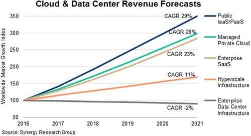

Even though the basic construction and operation of large scale datacenters are key enabler of Cloud Computing, new technologies and business models also provides new opportunities to this area. Are you ready for the rise of cloud?
New trends in cloud computing:
1. Increased cloud storage capacity
As cloud services have a bigger and bigger influence on businesses, we expect data storage to grow exponentially in the coming year. As a result, some businesses will be able to further their objectives.[2]
2. Exponential growth in cloud services solutions.
You might have heard about SaaS - a software licensing and delivery model in which software is licensed on a subscription basis and is centrally hosted. [3] However, you might not be aware that the growth of infrastructure and platform as a service (Iaas and PaaS, respectively) has expanded the number of cloud solutions available in the public and private sectors as well. [2]
Because of its flexibility and is relatively low-costing, businesses that want to simplify operations and make it easier for their customers to access services will move more aggressively toward integrating SaaS, IaaS, and/or PaaS into their business processes.
(Source:[4])
3. Serverless Computing.
Though the term is serverless computing, it doesn’t mean that you don’t use servers. Instead, it is more about avoid using too many machines or waste resources on idle machines. It can save operational and infrastructural costs, more information can be found in the energy efficiency page.
New application opportunities:
1. Mobile interactive applications.
Cloud would be useful to these devices not only because they must be highly available, but also because these services generally rely on large data sets that are most conveniently hosted in large datacenter, especially the case when multiple data sources are needed, e.g. mashups. [1]
2. Parallel batch processing.
Batch processing is basically a processing mode where the execution of a series of programs each on a set or "batch" of inputs, rather than a single input(a job). h. If there is enough data parallelism in the application, users can take advantage of the cloud’s new “cost associativity”: using hundreds of computers for a short time costs the same as using a few computers for a long time.
(Source:https://docs.oracle.com/en/cloud/paas/analytics-cloud/sp_common/shared-images/Analytics-cloud-270.png )
3. The rise of analytics.
This can be wudely used in businesses. A growing share of computing resources is now spent on understanding customers, supply chains, buying habits, ranking, and so on. Hence, while online transaction volumes will continue to grow slowly, decision support is growing rapidly, shifting the resource balance in database processing from transactions to business analytics.[1]